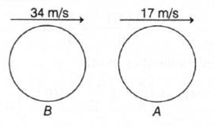
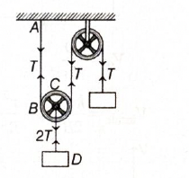
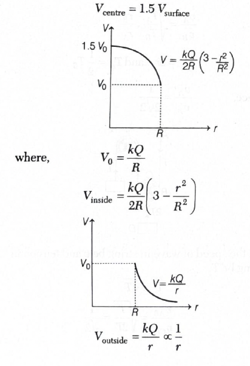
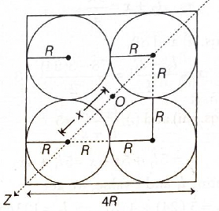
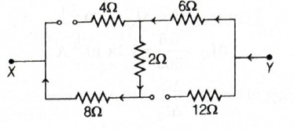
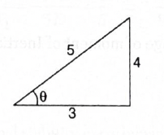
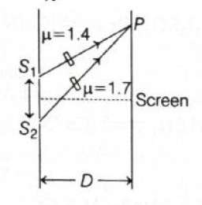

- Answer: \((a)\ 6.60\times10^{-34}\ \mathrm{J-s}\)
- Quick explanation: In photoelectric effect, \(eV_0=h(\nu-\nu_0)\), so the slope of the \(V_0-\nu\) graph is \(\dfrac{h}{e}\). From the graph, slope \(=\dfrac{16.5-0}{(8-4)\times10^{15}}\). Hence \(h=e\times\text{slope}=6.60\times10^{-34}\ \mathrm{J-s}\).
-
BITSAT chapter / topic / subtopic:
Modern Physics \(\rightarrow\) Photoelectric effect - P246
Modern Physics \(\rightarrow\) Einstein's photoelectric equation - P247
Modern Physics \(\rightarrow\) Photons - P246 - Einstein's photoelectric equation is: \(eV_0=h\nu-h\nu_0\).
- Rearranging: \(V_0=\left(\dfrac{h}{e}\right)\nu-\left(\dfrac{h}{e}\right)\nu_0\).
- This is of the form \(y=mx+c\), where the slope of the graph is \(\dfrac{h}{e}\).
- From the graph: \(\text{slope}=\dfrac{16.5-0}{(8-4)\times10^{15}}\).
- Therefore: \(h=e\times\text{slope}\).
- Substitute \(e=1.6\times10^{-19}\ \mathrm{C}\): \(h=1.6\times10^{-19}\times\dfrac{16.5}{4\times10^{15}}\).
- \(h=\dfrac{1.6\times16.5}{4}\times10^{-34}=6.60\times10^{-34}\ \mathrm{J-s}\).
- Final result: Planck's constant is \(6.60\times10^{-34}\ \mathrm{J-s}\).
- Simple memory tip: For a stopping-potential versus frequency graph, slope \(=\dfrac{h}{e}\). So multiply the slope by electronic charge \(e\) to get \(h\).
-
Why the other options are wrong:
- \((b)\), \((c)\), and \((d)\) do not match the slope calculated from the given graph.
- Exam shortcut: Do not use the intercept first. For Planck's constant, directly use graph slope: \(h=e\dfrac{\Delta V_0}{\Delta\nu}\).
- Answer: \((b)\ 132\ \mathrm{cm}\)
- Quick explanation: In a resonance column, end correction must be included. For first, second and third resonances: \(l_1+x=\dfrac{\lambda}{4}\), \(l_2+x=\dfrac{3\lambda}{4}\), and \(l_3+x=\dfrac{5\lambda}{4}\). Using \(l_1=24\ \mathrm{cm}\) and \(l_2=78\ \mathrm{cm}\), the end correction is \(x=3\ \mathrm{cm}\), giving \(l_3=132\ \mathrm{cm}\).
-
BITSAT chapter / topic / subtopic:
Waves \(\rightarrow\) Stationary Waves - P129
Waves \(\rightarrow\) Reflection of Waves - P128 - For the first resonance: \(l_1+x=\dfrac{\lambda}{4}\).
- For the second resonance: \(l_2+x=\dfrac{3\lambda}{4}\).
- For the third resonance: \(l_3+x=\dfrac{5\lambda}{4}\).
- Given: \(l_1=24\ \mathrm{cm}\), \(l_2=78\ \mathrm{cm}\).
- From the first two equations, the end correction is: \(x=\dfrac{l_2-3l_1}{2}\).
- Substitute: \(x=\dfrac{78-3(24)}{2}=\dfrac{78-72}{2}=3\ \mathrm{cm}\).
- Now compare third and first resonance: \(\dfrac{l_3+x}{l_1+x}=5\).
- So: \(l_3+x=5(l_1+x)\).
- Therefore: \(l_3=5l_1+4x\).
- Substitute \(l_1=24\ \mathrm{cm}\) and \(x=3\ \mathrm{cm}\): \(l_3=5(24)+4(3)=120+12=132\ \mathrm{cm}\).
- Final result: Third resonance is obtained at \(132\ \mathrm{cm}\).
- Simple memory tip: In a closed pipe resonance column, resonances correspond to odd multiples: \(\lambda/4\), \(3\lambda/4\), \(5\lambda/4\). Do not forget end correction.
-
Why the other options are wrong:
- \((a)\), \((c)\), and \((d)\) do not satisfy the resonance-column relation with end correction.
- Exam shortcut: Once \(x\) is found, use \(l_3=5l_1+4x\) directly for the third resonance.
- Answer: \((a)\ 613.7\ \mathrm{Hz}\)
- Quick explanation: This is a two-step Doppler effect problem because the sound is first received by submarine \(A\), then reflected back and received by \(B\). First calculate the frequency received by \(A\), then treat \(A\) as the moving source for the reflected sound. Substitution gives \(613.7\ \mathrm{Hz}\).
-
BITSAT chapter / topic / subtopic:
Waves \(\rightarrow\) Waves - P126
Waves \(\rightarrow\) Factors affecting the speed of sound in a gaseous medium - P126 -

- Given: \(v_A=17\ \mathrm{m/s}\), \(v_B=34\ \mathrm{m/s}\), sound speed \(v_s=1500\ \mathrm{m/s}\), and transmitted frequency \(f_0=600\ \mathrm{Hz}\).
- First, signal sent by \(B\) is detected by \(A\). Since both are moving in the same direction and \(B\) is behind \(A\), the frequency received by \(A\) is: \(f_1=\left(\dfrac{v_s-v_A}{v_s-v_B}\right)f_0\).
- Substitute: \(f_1=\left(\dfrac{1500-17}{1500-34}\right)600\).
- \(f_1=\dfrac{1483}{1466}\times600\).
- Now the reflected wave is received by submarine \(B\). For this second Doppler step: \(f_2=\left(\dfrac{v_s+v_B}{v_s+v_A}\right)f_1\).
- Substitute \(f_1\): \(f_2=\left(\dfrac{1500+34}{1500+17}\right)\left(\dfrac{1483}{1466}\times600\right)\).
- \(f_2=1.0112\times1.0115\times600\).
- Therefore: \(f_2=613.7\ \mathrm{Hz}\).
- Final result: The reflected sound received by \(B\) has frequency \(613.7\ \mathrm{Hz}\).
- Simple memory tip: Echo or reflection Doppler problems are usually two Doppler shifts, not one.
-
Why the other options are wrong:
- \((b)\) is too large by a factor of \(10\).
- \((c)\) and \((d)\) do not match the two-step Doppler calculation.
- Exam shortcut: For reflected sound, apply Doppler effect once for receiving at the reflector and once again for the reflected wave returning to the observer.
- Answer: \((c)\ 1:2\sqrt{2}\)
- Quick explanation: Wave speed on a string is \(v=\sqrt{\dfrac{T}{\mu}}\), where \(\mu\) is mass per unit length. For the same material, \(\mu\propto r^2\). Given \(r_A=2r_B\), so \(\mu_A=4\mu_B\), and \(T_A=\dfrac{1}{2}T_B\). Hence \(\dfrac{v_A}{v_B}=\sqrt{\dfrac{T_A}{T_B}\dfrac{\mu_B}{\mu_A}} =\sqrt{\dfrac{1}{2}\times\dfrac{1}{4}}=\dfrac{1}{2\sqrt{2}}\).
-
BITSAT chapter / topic / subtopic:
Waves \(\rightarrow\) Waves - P126
Waves \(\rightarrow\) Speed of transverse wave - P126 - Speed of transverse wave in a stretched wire is: \(v=\sqrt{\dfrac{T}{\mu}}\).
- Here \(T\) is tension and \(\mu\) is mass per unit length.
- For a wire of radius \(r\) and density \(\rho\): \(\mu=\pi r^2\rho\).
- Since both wires are steel wires, density \(\rho\) is the same, so: \(\mu\propto r^2\).
- The diameter of \(A\) is twice that of \(B\), so radius of \(A\) is also twice radius of \(B\): \(r_A=2r_B\).
- Therefore: \(\mu_A=4\mu_B\).
- Also given: \(T_A=\dfrac{1}{2}T_B\).
- Now: \(\dfrac{v_A}{v_B}=\sqrt{\dfrac{T_A/\mu_A}{T_B/\mu_B}}\).
- So: \(\dfrac{v_A}{v_B}=\sqrt{\dfrac{T_A}{T_B}\times\dfrac{\mu_B}{\mu_A}}\).
- Substitute: \(\dfrac{v_A}{v_B}=\sqrt{\dfrac{1}{2}\times\dfrac{1}{4}}\).
- Therefore: \(\dfrac{v_A}{v_B}=\dfrac{1}{2\sqrt{2}}\).
- Hence: \(v_A:v_B=1:2\sqrt{2}\).
- Final result: The ratio of wave velocities in \(A\) and \(B\) is \(1:2\sqrt{2}\).
- Simple memory tip: Thicker wire has larger mass per unit length, so wave speed becomes smaller. Lower tension also makes speed smaller.
-
Why the other options are wrong:
- \((a)\), \((b)\), and \((d)\) do not account for both the tension ratio and the radius-squared dependence of mass per unit length.
- Exam shortcut: Same material means \(\mu\propto r^2\). Use \(\dfrac{v_A}{v_B}=\sqrt{\dfrac{T_A}{T_B}}\times\dfrac{r_B}{r_A}\).
- Answer: \((d)\ 1/\sqrt{2}\)
- Quick explanation: Speed of wave in a stretched string is \(v=\sqrt{\dfrac{T}{\mu}}\). Since both strings are made of the same material and have the same cross-section, \(\mu\) is the same for both. From the pulley arrangement, tension in \(AB\) is \(T\), while tension in \(CD\) is \(2T\), so \(\dfrac{v_1}{v_2}=\sqrt{\dfrac{T}{2T}}=\dfrac{1}{\sqrt{2}}\).
-
BITSAT chapter / topic / subtopic:
Waves \(\rightarrow\) Speed of transverse wave - P126
Newton's Laws of Motion \(\rightarrow\) Motion of connected bodies - P32
Newton's Laws of Motion \(\rightarrow\) Types of forces - P32 -

- For a stretched string, wave speed is: \(v=\sqrt{\dfrac{T}{\mu}}\), where \(T\) is tension and \(\mu\) is mass per unit length.
- Both strings are of the same material and same cross-section, so their linear mass density \(\mu\) is the same.
- Therefore, wave speed depends only on tension: \(v\propto\sqrt{T}\).
- Let the tension in string \(AB\) be \(T\).
- From the pulley arrangement, string \(CD\) effectively supports the movable pulley with two tensions, so its tension corresponds to \(2T\).
- Hence: \(v_1\propto\sqrt{T}\) and \(v_2\propto\sqrt{2T}\).
- Therefore: \(\dfrac{v_1}{v_2}=\dfrac{\sqrt{T}}{\sqrt{2T}}=\dfrac{1}{\sqrt{2}}\).
- Final result: \(\dfrac{v_1}{v_2}=\dfrac{1}{\sqrt{2}}\).
- Simple memory tip: Same string material and same cross-section means same \(\mu\). So only compare tensions using \(v\propto\sqrt{T}\).
-
Why the other options are wrong:
- \((a)\) would be correct only if both strings had the same tension.
- \((b)\) reverses the ratio.
- \((c)\) treats speed as directly proportional to tension, but speed is proportional to square root of tension.
- Exam shortcut: In pulley-wave questions, first find string tension, then use \(v\propto\sqrt{T}\).
- Answer: \((d)\ g\left[1-\dfrac{d}{R}\right]\)
- Quick explanation: Inside the Earth, assuming uniform density, only the mass inside radius \(R-d\) contributes to gravity. Hence acceleration due to gravity decreases linearly with depth: \(g'=g\left(1-\dfrac{d}{R}\right)\).
-
BITSAT chapter / topic / subtopic:
Gravitation \(\rightarrow\) Gravity - P82
Gravitation \(\rightarrow\) Gravitational Field - P83 - At the surface of Earth: \(g=\dfrac{GM}{R^2}\).
- If Earth has uniform density \(\rho\), then: \(M=\dfrac{4}{3}\pi R^3\rho\).
- Therefore: \(g=\dfrac{G\left(\dfrac{4}{3}\pi R^3\rho\right)}{R^2} =\dfrac{4}{3}\pi G\rho R\).
- At depth \(d\), the distance from Earth's centre is: \(r=R-d\).
- The acceleration due to gravity at that depth is: \(g'=\dfrac{4}{3}\pi G\rho(R-d)\).
- Divide \(g'\) by \(g\): \(\dfrac{g'}{g}=\dfrac{R-d}{R}\).
- Therefore: \(g'=g\left(1-\dfrac{d}{R}\right)\).
- Final result: Acceleration due to gravity at depth \(d\) is \(g\left(1-\dfrac{d}{R}\right)\).
- Simple memory tip: Below Earth's surface, \(g\) decreases linearly with depth. Above Earth's surface, it decreases with inverse-square distance.
-
Why the other options are wrong:
- \((a)\) is the type of form used for height above the surface, not depth.
- \((b)\) has an incorrect factor \(2\).
- \((c)\) incorrectly makes gravity increase with depth.
- Exam shortcut: For depth questions, directly remember: \(g_d=g\left(1-\dfrac{d}{R}\right)\).
- Answer: \((c)\ 9.27\ \mathrm{A}\)
- Quick explanation: The total current is \(I=6+10\sin\omega t\). Effective value means rms value. Since average of \(\sin\omega t\) over one cycle is \(0\), and average of \(\sin^2\omega t\) is \(\dfrac{1}{2}\), we get \(I_{\mathrm{eff}}=\sqrt{6^2+\dfrac{10^2}{2}}=\sqrt{86}=9.27\ \mathrm{A}\).
-
BITSAT chapter / topic / subtopic:
Electromagnetic Induction \(\rightarrow\) Alternating Current -
P211
Electromagnetic Induction \(\rightarrow\) AC Current - P211 - Given total current: \(I=6+10\sin\omega t\).
- Effective current or rms current is: \(I_{\mathrm{eff}}=\sqrt{\dfrac{1}{T}\int_0^T I^2\,dt}\).
- Substitute: \(I_{\mathrm{eff}}=\sqrt{\dfrac{1}{T}\int_0^T(6+10\sin\omega t)^2dt}\).
- Expand the square: \((6+10\sin\omega t)^2=36+120\sin\omega t+100\sin^2\omega t\).
- Over one complete cycle: \(\dfrac{1}{T}\int_0^T\sin\omega t\,dt=0\).
- Also: \(\dfrac{1}{T}\int_0^T\sin^2\omega t\,dt=\dfrac{1}{2}\).
- Therefore: \(I_{\mathrm{eff}}=\sqrt{36+\dfrac{1}{2}\times100}\).
- \(I_{\mathrm{eff}}=\sqrt{36+50}=\sqrt{86}=9.27\ \mathrm{A}\).
- Final result: Effective current is \(9.27\ \mathrm{A}\).
- Simple memory tip: DC and AC rms values combine by squares, not by direct addition.
-
Why the other options are wrong:
- \((a)\) is only the rms value of \(10\sin\omega t\).
- \((b)\) and \((d)\) do not match the rms calculation of the combined current.
- Exam shortcut: For \(I=I_{\mathrm{dc}}+I_0\sin\omega t\), use \(I_{\mathrm{rms}}=\sqrt{I_{\mathrm{dc}}^2+\dfrac{I_0^2}{2}}\).
- Answer: \((d)\)
- Quick explanation: For a uniformly charged non-conducting sphere, potential is maximum at the centre and decreases smoothly up to the surface. Outside the sphere, it behaves like \(V=\dfrac{kQ}{r}\). Therefore the correct graph is the smooth inside curve joined to a \(1/r\) curve outside, which is option \((d)\).
-
BITSAT chapter / topic / subtopic:
Electrostatics \(\rightarrow\) Electric potential - P158
Electrostatics \(\rightarrow\) Electric field - P156
Electrostatics \(\rightarrow\) Gauss's law - P158 -

- For a uniformly charged non-conducting sphere, electric potential inside the sphere is: \(V_{\mathrm{inside}}=\dfrac{kQ}{2R}\left(3-\dfrac{r^2}{R^2}\right)\).
- At the centre, \(r=0\): \(V_{\mathrm{centre}}=\dfrac{3kQ}{2R}\).
- At the surface, \(r=R\): \(V_{\mathrm{surface}}=\dfrac{kQ}{R}\).
- So: \(V_{\mathrm{centre}}=1.5V_{\mathrm{surface}}\).
- This means potential is highest at the centre and decreases smoothly towards the surface.
- Outside the sphere, the sphere behaves like a point charge at the centre: \(V_{\mathrm{outside}}=\dfrac{kQ}{r}\).
- Thus, after \(r=R\), potential decreases as \(\dfrac{1}{r}\).
- The graph that shows a smooth decrease inside and a \(1/r\)-type decrease outside is option \((d)\).
- Final result: Correct graph is option \((d)\).
- Simple memory tip: For a conducting sphere, potential is constant inside. For a non-conducting uniformly charged sphere, potential changes inside and is maximum at the centre.
-
Why the other options are wrong:
- \((a)\) shows constant potential inside, which is for a conductor, not a non-conducting charged sphere.
- \((b)\) and \((c)\) do not match the smooth inside variation and \(1/r\) outside variation.
- Exam shortcut: Non-conducting solid sphere: inside potential is parabolic, outside potential is \(1/r\).
- Answer: \((d)\ 5\mathrm{eV}\)
- Quick explanation: Insulators have a large forbidden energy gap between the valence band and conduction band. For an insulator, \(E_g\) is generally greater than about \(3\mathrm{eV}\), so among the given options \(5\mathrm{eV}\) is the correct value.
-
BITSAT chapter / topic / subtopic:
Electronic Devices \(\rightarrow\) Energy bands of solids or
band theory of solids - P263
Electronic Devices \(\rightarrow\) Distinction between metals, insulators and semiconductors on the basis of band theory - P263 - In solids, electrons occupy allowed energy bands. The important two bands are the valence band and the conduction band.
- The energy gap between the valence band and conduction band is called the forbidden energy gap, \(E_g\).
- In metals, the valence band and conduction band overlap or the gap is nearly zero, so electrons can move easily.
- In semiconductors, the forbidden gap is small, so some electrons can jump to the conduction band with thermal energy.
- In insulators, the forbidden gap is large, usually greater than \(3\mathrm{eV}\). So electron transition from valence band to conduction band is not easy.
- Among the given options, \(5\mathrm{eV}\) represents a large energy gap, so it corresponds to an insulator.
- Final result: Forbidden energy gap for an insulator is \(5\mathrm{eV}\).
- Simple memory tip: Metal: almost no gap. Semiconductor: small gap. Insulator: big gap.
-
Why the other options are wrong:
- \((a)\) zero is for metals, not insulators.
- \((b)\) and \((c)\) are small gaps, more suitable for semiconductors.
- Exam shortcut: If \(E_g>3\mathrm{eV}\), think insulator. So \(5\mathrm{eV}\) is the best option.
- Answer: \((b)\ 9\)
- Quick explanation: Power is energy delivered per unit time. Each bullet gets kinetic energy \(\dfrac{1}{2}mv^2\). For \(300\) bullets in \(60\ \mathrm{s}\), total kinetic energy divided by time gives \(9\ \mathrm{kW}\).
-
BITSAT chapter / topic / subtopic:
Work and Energy \(\rightarrow\) Energy - P58
Work and Energy \(\rightarrow\) Power - P60
Work and Energy \(\rightarrow\) Various forms of energy - P60 - Mass of each bullet: \(m=10\ \mathrm{g}=10\times10^{-3}\ \mathrm{kg}=0.01\ \mathrm{kg}\).
- Speed of each bullet: \(v=600\ \mathrm{m/s}\).
- Kinetic energy of one bullet is: \(K=\dfrac{1}{2}mv^2\).
- So: \(K=\dfrac{1}{2}\times10\times10^{-3}\times(600)^2\).
- The gun fires \(300\) bullets per minute, so total work done in one minute is: \(300\times\dfrac{1}{2}\times10\times10^{-3}\times(600)^2\).
- Power is: \(P=\dfrac{\text{work done}}{\text{time taken}}\).
- Time taken is \(60\ \mathrm{s}\), so: \(P=\dfrac{300\times\dfrac{1}{2}\times10\times10^{-3}\times600\times600}{60}\).
- \(P=9000\ \mathrm{W}=9\ \mathrm{kW}\).
- Final result: Power of the gun is \(9\ \mathrm{kW}\).
- Simple memory tip: Bullet questions usually use kinetic energy per bullet multiplied by number of bullets per second.
-
Why the other options are wrong:
- \((a)\) is far too large and comes from unit/time mistakes.
- \((c)\) and \((d)\) do not match the kinetic-energy-per-second calculation.
- Exam shortcut: Convert bullets per minute to bullets per second first: \(300/60=5\). Then power \(=5\times\dfrac{1}{2}mv^2\).
- Answer: \((c)\ 0.0017\ \mathrm{kg-m^2}\)
- Quick explanation: Find the moment of inertia of the complete square plate, then subtract the moment of inertia of four removed circular portions about the same \(Z\)-axis. For each circular hole, use its own moment of inertia plus parallel-axis theorem. Substitution gives \(0.0017\ \mathrm{kg-m^2}\).
-
BITSAT chapter / topic / subtopic:
Rotational Motion \(\rightarrow\) Moment of Inertia - P70
Rotational Motion \(\rightarrow\) Moment of Inertia and Radius of gyration of some regular bodies about specific axis - P71 -

- Let radius of each circular hole be \(R=5\ \mathrm{cm}\). The square side is \(20\ \mathrm{cm}=4R\).
- Area of the square plate is: \((4R)^2=16R^2\).
- Area mass density is: \(\sigma=\dfrac{M}{16R^2}\).
- Mass of each circular hole is: \(m_1=\sigma\pi R^2=\dfrac{M}{16R^2}\pi R^2=\dfrac{\pi M}{16}\).
- Distance between centre of the square plate and centre of each hole is: \(x=\dfrac{\sqrt{(2R)^2+(2R)^2}}{2}=\sqrt{2}R\).
- Moment of inertia of one circular hole about the \(Z\)-axis is found using parallel-axis theorem: \(I_1=\dfrac{1}{2}m_1R^2+m_1x^2\).
- Substitute \(m_1=\dfrac{\pi M}{16}\) and \(x^2=2R^2\): \(I_1=\dfrac{1}{2}\left(\dfrac{\pi M}{16}\right)R^2+\left(\dfrac{\pi M}{16}\right)2R^2\).
- So: \(I_1=\dfrac{5\pi}{32}MR^2\).
- Moment of inertia of the complete square plate about \(Z\)-axis is: \(I=\dfrac{M(4R)^2}{6}=\dfrac{8}{3}MR^2\).
- Required moment of inertia of remaining plate: \(I_0=I-4I_1\).
- Therefore: \(I_0=\left[\dfrac{8}{3}-4\left(\dfrac{5\pi}{32}\right)\right]MR^2\).
- \(I_0=\left[\dfrac{8}{3}-\dfrac{5\pi}{8}\right]MR^2\).
- Given \(M=1\ \mathrm{kg}\) and \(R=5\ \mathrm{cm}=5\times10^{-2}\ \mathrm{m}\).
- So: \(R^2=25\times10^{-4}\ \mathrm{m^2}\).
- Hence: \(I_0=\left[\dfrac{8}{3}-\dfrac{5\pi}{8}\right]\times1\times25\times10^{-4}\).
- \(I_0\approx0.0017\ \mathrm{kg-m^2}\).
- Final result: Moment of inertia of the remaining portion is \(0.0017\ \mathrm{kg-m^2}\).
- Simple memory tip: For holes, calculate as if the holes are present, then subtract their moment of inertia from the full plate.
-
Why the other options are wrong:
- \((a)\), \((b)\), and \((d)\) do not match the subtraction of four circular portions using parallel-axis theorem.
- Exam shortcut: For removed parts, use: \(I_{\mathrm{remaining}}=I_{\mathrm{complete}}-I_{\mathrm{removed}}\).
- Answer: \((b)\ v\cos\theta\)
- Quick explanation: At the highest point, vertical velocity is zero and horizontal velocity is \(v\cos\theta\). During the explosion, external impulse is negligible, so horizontal momentum is conserved. One half continues with \(v\cos\theta\), so the other half also gets velocity \(v\cos\theta\).
-
BITSAT chapter / topic / subtopic:
Kinematics \(\rightarrow\) Projectile - P20
Impulse and Momentum \(\rightarrow\) Law of Conservation of Linear Momentum - P46 - At the highest point of projectile motion, the vertical component of velocity becomes zero.
- The horizontal component remains: \(v_x=v\cos\theta\).
- Therefore, just before explosion, momentum of the particle is: \(p=mv\cos\theta\).
- The particle explodes into two equal parts, so each part has mass \(\dfrac{m}{2}\).
- One piece continues on the original trajectory, so its velocity remains \(v\cos\theta\).
- Let the velocity of the second piece be \(v'\).
- Applying conservation of linear momentum in the horizontal direction: \(mv\cos\theta=\dfrac{m}{2}(v\cos\theta)+\dfrac{m}{2}v'\).
- Rearranging: \(mv\cos\theta-\dfrac{m}{2}v\cos\theta=\dfrac{m}{2}v'\).
- So: \(\dfrac{m}{2}v\cos\theta=\dfrac{m}{2}v'\).
- Hence: \(v'=v\cos\theta\).
- Final result: Velocity of second piece is \(v\cos\theta\).
- Simple memory tip: At the top of a projectile, only horizontal velocity remains. Explosion problems usually use momentum conservation at that instant.
-
Why the other options are wrong:
- \((a)\), \((c)\), and \((d)\) do not satisfy conservation of horizontal momentum for two equal masses.
- Exam shortcut: At highest point, write initial momentum as \(mv\cos\theta\), then split it between the two equal masses.
- Answer: \((b)\ 20\ \mathrm{mA}\)
- Quick explanation: The ideal diode conducts only when \(V_i\) becomes greater than \(+1\ \mathrm{V}\). Initially, at \(V_i=-2\ \mathrm{V}\), current is zero. Finally, at \(V_i=6\ \mathrm{V}\), the voltage across \(250\Omega\) is \(6-1=5\ \mathrm{V}\), so \(I=\dfrac{5}{250}=0.02\ \mathrm{A}=20\ \mathrm{mA}\).
-
BITSAT chapter / topic / subtopic:
Electronic Devices \(\rightarrow\) Rectifier - P266
Electronic Devices \(\rightarrow\) Energy bands of solids or band theory of solids - P263 - An ideal diode behaves like a switch. In forward bias, it conducts with zero resistance; in reverse bias, it behaves like an open circuit.
- In the given circuit, current starts only when the input \(V_i\) is greater than the \(+1\ \mathrm{V}\) terminal connected after the diode.
- At \(V_i=-2\ \mathrm{V}\), the diode is not forward biased. So: \(I_{\mathrm{initial}}=0\).
- At \(V_i=6\ \mathrm{V}\), the diode conducts.
- The voltage across the resistor is: \(6-1=5\ \mathrm{V}\).
- Current through the resistor: \(I_{\mathrm{final}}=\dfrac{5}{250}=0.02\ \mathrm{A}\).
- Convert to milliampere: \(0.02\ \mathrm{A}=20\ \mathrm{mA}\).
- Change in current: \(\Delta I=I_{\mathrm{final}}-I_{\mathrm{initial}}=20-0=20\ \mathrm{mA}\).
- Final result: Change in current is \(20\ \mathrm{mA}\).
- Simple memory tip: Ideal diode means no voltage drop across the diode when it conducts. So only the resistor decides the current.
-
Why the other options are wrong:
- \((a)\) is wrong because current changes after the diode becomes forward biased.
- \((c)\) and \((d)\) do not match \(I=\dfrac{5}{250}\).
- Exam shortcut: Check diode conduction condition first. If ideal diode is ON, replace it by a wire; if OFF, replace it by an open circuit.
- Answer: \((b)\ 1:3\)
- Quick explanation: Equal wavelengths mean equal momenta, because \(\lambda=\dfrac{h}{p}\). For the electron, \(p_e=m_ev_e\), and for photon, \(p_p=m_pc\) in the equivalent mass form. Since \(v_e=\dfrac{c}{3}\), equality of momenta gives \(m_e=3m_p\). Therefore the kinetic-energy ratio becomes \(1:3\).
-
BITSAT chapter / topic / subtopic:
Modern Physics \(\rightarrow\) Dual nature of radiation -
P247
Modern Physics \(\rightarrow\) de Broglie waves - P247
Modern Physics \(\rightarrow\) Photons - P246 - de-Broglie wavelength is: \(\lambda=\dfrac{h}{mv}\).
- For the electron: \(\lambda_e=\dfrac{h}{m_e(c/3)}\).
- For the photon, using momentum form: \(\lambda_p=\dfrac{h}{m_pc}\).
- Given: \(\lambda_e=\lambda_p\).
- So: \(\dfrac{h}{m_e(c/3)}=\dfrac{h}{m_pc}\).
- Cancelling \(h\) and \(c\), we get: \(\dfrac{m_e}{m_p}=3\).
- Now compare kinetic energies using the relation followed in the given solution: \(\dfrac{K_e}{K_p}=\dfrac{\dfrac{1}{2}m_ev_e^2}{\dfrac{1}{2}m_pv_p^2}\).
- Here \(v_e=\dfrac{c}{3}\), \(v_p=c\), and \(\dfrac{m_e}{m_p}=3\).
- Therefore: \(\dfrac{K_e}{K_p}=3\times\left(\dfrac{1}{3}\right)^2=\dfrac{1}{3}\).
- Hence: \(K_e:K_p=1:3\).
- Final result: Ratio of kinetic energies of electron and photon is \(1:3\).
- Simple memory tip: Equal de-Broglie wavelength means equal momentum. After that, compare energies using the speeds.
-
Why the other options are wrong:
- \((a)\), \((c)\), and \((d)\) do not satisfy the equal-wavelength condition with \(v_e=\dfrac{c}{3}\).
- Exam shortcut: First use \(\lambda=\dfrac{h}{p}\). Equal \(\lambda\Rightarrow\) equal momentum.
- Answer: \((b)\ 2.82\mathrm{V},\ 1.41\mathrm{A}\)
- Quick explanation: The given solution treats the circuit as series resonance, where \(X_L=X_C=10\Omega\). Hence total impedance becomes purely resistive, \(Z=8+2=10\Omega\). Maximum current is \(i_{\max}=\dfrac{20}{10}=2\mathrm{A}\), so ammeter reads \(i_{\mathrm{rms}}=\dfrac{2}{\sqrt{2}}=1.41\mathrm{A}\), and voltmeter across \(2\Omega\) reads \(V=1.41\times2=2.82\mathrm{V}\).
-
BITSAT chapter / topic / subtopic:
Electromagnetic Induction \(\rightarrow\) Alternating Current -
P211
Electromagnetic Induction \(\rightarrow\) Series LCR Circuit - P212
Electromagnetic Induction \(\rightarrow\) AC Current - P211 - Given: \(R_1=8\Omega\), \(R_2=2\Omega\), \(C=50\mu\mathrm{F}\), and \(V=20\cos(2000t)\).
- The angular frequency is: \(\omega=2000\ \mathrm{rad/s}\).
- According to the provided solution, the inductive reactance is: \(X_L=\omega L=10\Omega\).
- The capacitive reactance is: \(X_C=\dfrac{1}{\omega C}=\dfrac{1}{2000\times50\times10^{-6}}=10\Omega\).
- Since \(X_L=X_C\), the circuit is at resonance and the reactive parts cancel each other.
- Therefore the impedance is only the total resistance: \(Z=8+2=10\Omega\).
- The source voltage \(20\cos(2000t)\) has peak value: \(V_0=20\mathrm{V}\).
- Maximum current: \(i_{\max}=\dfrac{V_0}{Z}=\dfrac{20}{10}=2\mathrm{A}\).
- Ammeter reads rms current: \(i_{\mathrm{rms}}=\dfrac{i_{\max}}{\sqrt{2}}=\dfrac{2}{\sqrt{2}}=1.41\mathrm{A}\).
- The voltmeter is across the \(2\Omega\) resistor, so: \(V=R_2i_{\mathrm{rms}}\).
- \(V=2\times1.41=2.82\mathrm{V}\).
- Note: The figure text appears to show \(50\mathrm{mH}\), but the given answer-key solution uses the value that makes \(X_L=10\Omega\), i.e. \(L=5\mathrm{mH}\). The marked answer follows the printed solution.
- Final result: Voltmeter reading is \(2.82\mathrm{V}\) and ammeter reading is \(1.41\mathrm{A}\).
- Simple memory tip: At resonance in an LCR circuit, \(X_L=X_C\), so the circuit behaves like a simple resistor circuit.
-
Why the other options are wrong:
- \((a)\), \((c)\), and \((d)\) do not match the resonance-current calculation used in the solution.
- Exam shortcut: If \(X_L=X_C\), skip the reactive part and use \(Z=R_{\mathrm{total}}\). Then convert peak current to rms for ammeter reading.
- Answer: \((a)\ 2.66\times10^{-8}\)
- Quick explanation: For an electromagnetic wave, \(\dfrac{E}{B}=c\). Therefore \(B=\dfrac{E}{c}=\dfrac{8}{3\times10^8}=2.66\times10^{-8}\ \mathrm{T}\).
-
BITSAT chapter / topic / subtopic:
Waves \(\rightarrow\) Waves - P126
Electrostatics \(\rightarrow\) Electric field - P156
Magnetic Effect of Current \(\rightarrow\) Magnetic Field - P191 - In an electromagnetic wave, electric field and magnetic field are related by: \(\dfrac{E}{B}=c\).
- Here: \(E=8\ \mathrm{V/m}\), and \(c=3\times10^8\ \mathrm{m/s}\).
- So: \(B=\dfrac{E}{c}\).
- Substitute: \(B=\dfrac{8}{3\times10^8}\).
- Therefore: \(B=2.66\times10^{-8}\ \mathrm{T}\).
- Final result: Magnitude of magnetic vector is \(2.66\times10^{-8}\ \mathrm{T}\).
- Simple memory tip: In EM waves, electric field is much larger numerically because \(E=cB\).
-
Why the other options are wrong:
- \((b)\), \((c)\), and \((d)\) do not match \(B=\dfrac{E}{c}\).
- Exam shortcut: Directly use \(B=\dfrac{E}{3\times10^8}\) for EM wave magnitude questions.
- Answer: \((c)\ 16\Omega\)
- Quick explanation: \(X\) is at \(-12\ \mathrm{V}\) and \(Y\) is at \(-3\ \mathrm{V}\), so \(X\) is at lower potential with respect to \(Y\). Both diodes become reverse biased, so their branches act like open circuits. The remaining effective path contains \(8\Omega\), \(2\Omega\), and \(6\Omega\) in series, giving \(R_{\mathrm{eq}}=16\Omega\).
-
BITSAT chapter / topic / subtopic:
Current Electricity \(\rightarrow\) Combination of resistors -
P175
Electronic Devices \(\rightarrow\) Rectifier - P266 -

- Since \(X=-12\ \mathrm{V}\) and \(Y=-3\ \mathrm{V}\), point \(X\) is at lower potential than point \(Y\).
- With this polarity, both ideal diodes are reverse biased. An ideal reverse-biased diode behaves like an open circuit.
- So the branches containing the diodes are removed from the effective conducting path.
- The remaining path between \(X\) and \(Y\) contains \(8\Omega\), \(2\Omega\), and \(6\Omega\) in series.
- For series resistors, equivalent resistance is the simple sum: \(R_{\mathrm{eq}}=8+2+6\).
- Therefore: \(R_{\mathrm{eq}}=16\Omega\).
- Final result: Equivalent resistance between \(X\) and \(Y\) is \(16\Omega\).
- Simple memory tip: Ideal diode ON means wire; ideal diode OFF means open circuit. First decide diode state, then simplify the resistor network.
-
Why the other options are wrong:
- \((a)\), \((b)\), and \((d)\) do not match the circuit after both reverse-biased diode branches are opened.
- Exam shortcut: In diode-resistor circuits, never start by combining all resistors. First check diode bias using the given potentials.
- Answer: \((d)\ \dfrac{mv^2}{3R}\)
- Quick explanation: When the insulated container is suddenly stopped, the translational kinetic energy of the gas is converted into internal energy. For a monoatomic gas, heat gained is \(\Delta Q=\dfrac{3}{2}nR\Delta T\). Equating this to the lost kinetic energy \(\dfrac{1}{2}(mn)v^2\) gives \(\Delta T=\dfrac{mv^2}{3R}\).
-
BITSAT chapter / topic / subtopic:
Heat and Thermodynamics \(\rightarrow\) Kinetic Theory of Gases
- P141
Heat and Thermodynamics \(\rightarrow\) Law of Equipartition of Energy - P141
Heat and Thermodynamics \(\rightarrow\) First Law of Thermodynamics - P144 - Let the insulated container have \(n\) moles of monoatomic gas.
- Since the molar mass is \(m\), total mass of the gas is: \(mn\).
- The kinetic energy of the moving gas-container system is: \(\Delta E_K=\dfrac{1}{2}(mn)v^2\).
- When the container is suddenly stopped, this kinetic energy is converted into internal energy of the gas.
- For a monoatomic ideal gas, change in internal energy is: \(\Delta U=\dfrac{3}{2}nR\Delta T\).
- Since the container is insulated, the lost kinetic energy becomes the heat/internal energy gained by the gas: \(\dfrac{3}{2}nR\Delta T=\dfrac{1}{2}mnv^2\).
- Cancel \(\dfrac{n}{2}\) from both sides: \(3R\Delta T=mv^2\).
- Hence: \(\Delta T=\dfrac{mv^2}{3R}\).
- Final result: Change in temperature of the gas is \(\dfrac{mv^2}{3R}\).
- Simple memory tip: For monoatomic gas, internal energy depends on temperature as \(\dfrac{3}{2}nRT\). Use this whenever kinetic energy is converted into heat.
-
Why the other options are wrong:
- \((a)\), \((b)\), and \((c)\) do not use the monoatomic gas internal-energy factor \(\dfrac{3}{2}\).
- Exam shortcut: Monoatomic gas means \(\Delta U=\dfrac{3}{2}nR\Delta T\). Equate this to the mechanical energy converted into heat.
- Answer: \((b)\ 2.4\ \mathrm{m}\)
- Quick explanation: The velocity components are \(u_x=3\ \mathrm{m/s}\) and \(u_y=4\ \mathrm{m/s}\). Time of flight is \(T=\dfrac{2u_y}{g}=\dfrac{8}{10}=0.8\ \mathrm{s}\). Horizontal range is \(R=u_xT=3\times0.8=2.4\ \mathrm{m}\).
-
BITSAT chapter / topic / subtopic:
Kinematics \(\rightarrow\) Projectile - P20
Kinematics \(\rightarrow\) Rectangular component of a vector in a plane - P19 -

- Given velocity: \(\vec{v}=3\hat{i}+4\hat{j}\).
- So the horizontal component is: \(u_x=3\ \mathrm{m/s}\).
- The vertical component is: \(u_y=4\ \mathrm{m/s}\).
- For projectile motion on level ground, time of flight is: \(T=\dfrac{2u_y}{g}\).
- Taking \(g=10\ \mathrm{m/s^2}\): \(T=\dfrac{2\times4}{10}=0.8\ \mathrm{s}\).
- Horizontal range is: \(R=u_xT\).
- Therefore: \(R=3\times0.8=2.4\ \mathrm{m}\).
- Final result: Horizontal range is \(2.4\ \mathrm{m}\).
- Simple memory tip: In vector form \(3\hat{i}+4\hat{j}\), the \(i\)-part is horizontal velocity and the \(j\)-part is vertical velocity.
-
Why the other options are wrong:
- \((a)\), \((c)\), and \((d)\) do not match \(R=u_x\dfrac{2u_y}{g}\).
- Exam shortcut: If velocity is already given as components, use \(R=\dfrac{2u_xu_y}{g}\) directly.
- Answer: \((b)\ 50\ \mu\mathrm{A}\)
- Quick explanation: First convert current gain \(\alpha\) to common-emitter gain \(\beta\) using \(\beta=\dfrac{\alpha}{1-\alpha}\). With \(\alpha=0.96\), \(\beta=24\). The collector current change is \(\Delta I_C=\dfrac{0.6}{500}=1.2\times10^{-3}\ \mathrm{A}\), so \(\Delta I_B=\dfrac{\Delta I_C}{\beta}=50\ \mu\mathrm{A}\).
-
BITSAT chapter / topic / subtopic:
Electronic Devices \(\rightarrow\) Transistor - P267
Electronic Devices \(\rightarrow\) Common emitter amplifier - P268 - Given current gain factor: \(\alpha=0.96\).
- Relation between common-base current gain \(\alpha\) and common-emitter current gain \(\beta\) is: \(\beta=\dfrac{\alpha}{1-\alpha}\).
- Substitute: \(\beta=\dfrac{0.96}{1-0.96}=\dfrac{0.96}{0.04}=24\).
- Voltage drop across collector resistor is: \(V_0=0.6\ \mathrm{V}\).
- Load resistance: \(R_L=500\Omega\).
- So change in collector current is: \(V_0=\Delta I_C R_L\).
- Therefore: \(\Delta I_C=\dfrac{0.6}{500}=1.2\times10^{-3}\ \mathrm{A}\).
- In CE configuration: \(\beta=\dfrac{\Delta I_C}{\Delta I_B}\).
- So: \(\Delta I_B=\dfrac{\Delta I_C}{\beta}\).
- Substitute: \(\Delta I_B=\dfrac{1.2\times10^{-3}}{24}=5\times10^{-5}\ \mathrm{A}\).
- Convert to microampere: \(5\times10^{-5}\ \mathrm{A}=50\times10^{-6}\ \mathrm{A}=50\ \mu\mathrm{A}\).
- Final result: Base current is \(50\ \mu\mathrm{A}\).
- Simple memory tip: In CE transistor questions, \(\beta\) connects collector current and base current. If \(\alpha\) is given, first convert it to \(\beta\).
-
Why the other options are wrong:
- \((a)\), \((c)\), and \((d)\) do not match \(\Delta I_B=\dfrac{\Delta I_C}{\beta}\).
- Exam shortcut: Use \(\beta=\dfrac{\alpha}{1-\alpha}\), then \(I_B=\dfrac{I_C}{\beta}\).
- Answer: \((d)\ \dfrac{22}{9}\ \mathrm{kg-m^2s^{-1}}\)
- Quick explanation: Find the initial moment of inertia of the solid sphere and the final moment of inertia of the disc. Then divide their difference by the time taken. Using \(I_{\mathrm{sphere}}=\dfrac{2}{5}MR^2\) and \(I_{\mathrm{disc}}=\dfrac{1}{2}MR^2\), the rate is \(\dfrac{22}{9}\ \mathrm{kg-m^2s^{-1}}\).
-
BITSAT chapter / topic / subtopic:
Rotational Motion \(\rightarrow\) Moment of Inertia - P70
Rotational Motion \(\rightarrow\) Moment of Inertia and Radius of gyration of some regular bodies about specific axis - P71 - Given mass: \(M=80\ \mathrm{kg}\).
- Radius of solid sphere: \(R_s=15\ \mathrm{m}\).
- Radius of circular disc: \(R_c=20\ \mathrm{m}\).
- Time taken: \(t=1\ \mathrm{h}=60\times60=3600\ \mathrm{s}\).
- Moment of inertia of a solid sphere is: \(I_s=\dfrac{2}{5}MR_s^2\).
- Substitute: \(I_s=\dfrac{2}{5}\times80\times(15)^2\).
- \(I_s=7200\ \mathrm{kg-m^2}\).
- Moment of inertia of a circular disc is: \(I_c=\dfrac{1}{2}MR_c^2\).
- Substitute: \(I_c=\dfrac{1}{2}\times80\times(20)^2\).
- \(I_c=16000\ \mathrm{kg-m^2}\).
- Rate of change of moment of inertia is: \(\dfrac{I_c-I_s}{t}\).
- So: \(\dfrac{16000-7200}{3600}=\dfrac{8800}{3600}=\dfrac{22}{9}\ \mathrm{kg-m^2s^{-1}}\).
- Final result: Rate of change of moment of inertia is \(\dfrac{22}{9}\ \mathrm{kg-m^2s^{-1}}\).
- Simple memory tip: Shape-changing moment of inertia questions usually need only: initial \(I\), final \(I\), then \(\dfrac{\Delta I}{\Delta t}\).
-
Why the other options are wrong:
- \((a)\), \((b)\), and \((c)\) do not match the difference \(16000-7200\) divided by \(3600\ \mathrm{s}\).
- Exam shortcut: Memorise standard moments: solid sphere \(=\dfrac{2}{5}MR^2\), disc \(=\dfrac{1}{2}MR^2\).
- Answer: \((c)\ X\) is suitable for making permanent magnet and \(Y\) for making electromagnet.
- Quick explanation: A permanent magnet needs high retentivity and high coercivity, so it should have a broad hysteresis loop. An electromagnet should have low coercivity and a narrow loop, so it magnetises and demagnetises easily. From the graphs, \(X\) has the broader loop and \(Y\) has the narrower loop.
-
BITSAT chapter / topic / subtopic:
Magnetic Effect of Current \(\rightarrow\) Magnetic Field -
P191
Magnetic Effect of Current \(\rightarrow\) Moving Coil Galvanometer - P194 - A \(B-H\) curve shows how a magnetic material responds to magnetising field \(H\).
- The width of the hysteresis loop indicates coercivity. Larger width means more difficulty in demagnetising the material.
- The height of the loop indicates retentivity. Higher retentivity means the material retains magnetism strongly.
- For a permanent magnet, we want high retentivity and high coercivity. This helps the magnet remain magnetised for a long time.
- For an electromagnet, we want low coercivity and small hysteresis loss, so the material can be magnetised and demagnetised easily.
- Sample \(X\) has a broader hysteresis loop, so it is better for making a permanent magnet.
- Sample \(Y\) has a narrower hysteresis loop, so it is better for making an electromagnet.
- Final result: \(X\) is suitable for permanent magnet and \(Y\) is suitable for electromagnet.
- Simple memory tip: Permanent magnet: broad loop. Electromagnet: narrow loop.
-
Why the other options are wrong:
- \((a)\) is wrong because \(X\) has a broader loop and is not the better electromagnet material.
- \((b)\) is wrong because \(Y\) has a narrow loop and is not suitable for permanent magnet.
- \((d)\) reverses the correct uses of \(X\) and \(Y\).
- Exam shortcut: In hysteresis-loop questions, do not overthink the material name. Broad loop means permanent magnet; narrow loop means electromagnet.
- Answer: \((a)\ A_1=A_2e^{-\lambda(t_1-t_2)}\)
- Quick explanation: Activity follows the same exponential decay form as the number of undecayed nuclei: \(A=A_0e^{-\lambda t}\). So \(A_1=A_0e^{-\lambda t_1}\) and \(A_2=A_0e^{-\lambda t_2}\). Dividing and rearranging gives \(A_1=A_2e^{-\lambda(t_1-t_2)}\).
-
BITSAT chapter / topic / subtopic:
Modern Physics \(\rightarrow\) Radioactivity - P251
Modern Physics \(\rightarrow\) Nuclear reaction - P252 - Radioactive decay law is: \(N=N_0e^{-\lambda t}\).
- Activity is defined as: \(A=-\dfrac{dN}{dt}\).
- Since \(A=\lambda N\), activity also decreases exponentially: \(A=A_0e^{-\lambda t}\).
- At time \(t_1\): \(A_1=A_0e^{-\lambda t_1}\).
- At time \(t_2\): \(A_2=A_0e^{-\lambda t_2}\).
- Divide the two equations: \(\dfrac{A_1}{A_2}=\dfrac{e^{-\lambda t_1}}{e^{-\lambda t_2}}\).
- Using exponent rules: \(\dfrac{A_1}{A_2}=e^{-\lambda(t_1-t_2)}\).
- Therefore: \(A_1=A_2e^{-\lambda(t_1-t_2)}\).
- Final result: \(A_1=A_2e^{-\lambda(t_1-t_2)}\).
- Simple memory tip: Activity is proportional to the number of undecayed nuclei, so activity also follows exponential decay.
-
Why the other options are wrong:
- \((b)\) has the wrong exponent sign for the given rearranged form.
- \((c)\) wrongly assumes inverse-time variation.
- \((d)\) is wrong because activity decreases with time.
- Exam shortcut: Write \(A=A_0e^{-\lambda t}\) at both times and divide. That avoids confusion with signs.
- Answer: \((a)\ 40\ \mathrm{cm}\) left
- Quick explanation: This is refraction at a spherical surface from air \((\mu_1=1)\) to glass \((\mu_2=1.5)\). Use \(\dfrac{\mu_2}{v}-\dfrac{\mu_1}{u}=\dfrac{\mu_2-\mu_1}{R}\). With \(u=-20\ \mathrm{cm}\) and \(R=+40\ \mathrm{cm}\), we get \(v=-40\ \mathrm{cm}\), meaning the image is formed on the left side.
-
BITSAT chapter / topic / subtopic:
Optics \(\rightarrow\) Refraction of Light - P226
Optics \(\rightarrow\) Total Internal Reflection - P228
Optics \(\rightarrow\) Refraction from a spherical surface - P228 - For refraction at a spherical surface: \(\dfrac{\mu_2}{v}-\dfrac{\mu_1}{u}=\dfrac{\mu_2-\mu_1}{R}\).
- Here the object is in air, so: \(\mu_1=1\).
- The refracting medium is glass, so: \(\mu_2=1.5\).
- From the figure: \(u=-20\ \mathrm{cm}\).
- Radius of curvature: \(R=+40\ \mathrm{cm}\).
- Substitute in the formula: \(\dfrac{1.5}{v}-\dfrac{1}{-20}=\dfrac{1.5-1}{40}\).
- So: \(\dfrac{1.5}{v}+\dfrac{1}{20}=\dfrac{0.5}{40}\).
- \(\dfrac{1.5}{v}+\dfrac{1}{20}=\dfrac{1}{80}\).
- Therefore: \(\dfrac{1.5}{v}=\dfrac{1}{80}-\dfrac{1}{20}\).
- \(\dfrac{1.5}{v}=\dfrac{1-4}{80}=-\dfrac{3}{80}\).
- Hence: \(v=\dfrac{1.5\times80}{-3}=-40\ \mathrm{cm}\).
- Negative sign shows that the image is formed on the same side as the object, i.e. towards the left.
- Final result: Image is formed \(40\ \mathrm{cm}\) to the left.
- Simple memory tip: For spherical refraction, signs are the main trap. A negative image distance means image on the object side.
-
Why the other options are wrong:
- \((b)\), \((c)\), and \((d)\) do not satisfy the spherical refraction formula with the given sign convention.
- Exam shortcut: For air to glass spherical surface questions, directly use \(\dfrac{\mu_2}{v}-\dfrac{\mu_1}{u}=\dfrac{\mu_2-\mu_1}{R}\) and keep the sign of \(u\) carefully.
- Answer: \((a)\ \dfrac{3R}{2}\)
- Quick explanation: From the graph, \(V\propto\dfrac{1}{T}\), so \(VT=\text{constant}\). Differentiating gives \(TdV+VdT=0\), or \(dV=-\dfrac{V}{T}dT\). Using \(CdT=C_VdT+pdV\), we get \(C=C_V-R\). For a diatomic gas, \(C_V=\dfrac{5R}{2}\), so \(C=\dfrac{3R}{2}\).
-
BITSAT chapter / topic / subtopic:
Heat and Thermodynamics \(\rightarrow\) First Law of
Thermodynamics - P144
Heat and Thermodynamics \(\rightarrow\) Specific heat capacity of gases - P143
Heat and Thermodynamics \(\rightarrow\) Thermodynamic Processes - P144 - From the straight-line graph between \(V\) and \(\dfrac{1}{T}\), we get: \(V\propto\dfrac{1}{T}\).
- Therefore: \(VT=\text{constant}\).
- Differentiate: \(TdV+VdT=0\).
- So: \(dV=-\dfrac{V}{T}dT\).
- From the first law of thermodynamics: \(dQ=dU+pdV\).
- For molar specific heat in the given process: \(CdT=C_VdT+pdV\).
- Substitute \(dV=-\dfrac{V}{T}dT\): \(CdT=C_VdT-p\dfrac{V}{T}dT\).
- Hence: \(C=C_V-\dfrac{pV}{T}\).
- For one mole of ideal gas: \(pV=RT\), so \(\dfrac{pV}{T}=R\).
- Therefore: \(C=C_V-R\).
- For a diatomic gas: \(C_V=\dfrac{5R}{2}\).
- So: \(C=\dfrac{5R}{2}-R=\dfrac{3R}{2}\).
- Final result: Molar specific heat of the gas in the process is \(\dfrac{3R}{2}\).
- Simple memory tip: First read the graph as a relation between variables. Here \(V\propto\dfrac{1}{T}\) means \(VT\) is constant.
-
Why the other options are wrong:
- \((b)\), \((c)\), and \((d)\) do not follow from \(C=C_V-R\) for this process.
- \((c)\) is \(C_V\) itself, but the process is not constant volume.
- \((d)\) is \(C_P\) for a diatomic gas, but the process is not constant pressure.
- Exam shortcut: If the graph gives \(VT=\text{constant}\), then use \(dV=-\dfrac{V}{T}dT\) in \(CdT=C_VdT+pdV\).
- Answer: \((d)\ 144\%\)
- Quick explanation: According to Poiseuille's law, the rate of flow through a capillary tube is proportional to \(r^4\). If radius increases by \(25\%\), then new radius is \(\dfrac{5}{4}\) times the old radius. Hence flow rate becomes \(\left(\dfrac{5}{4}\right)^4\approx2.44\) times, so the increase is about \(144\%\).
-
BITSAT chapter / topic / subtopic:
Mechanics of Solids and Fluids \(\rightarrow\) Fluids - P97
Mechanics of Solids and Fluids \(\rightarrow\) Viscosity - P100
Mechanics of Solids and Fluids \(\rightarrow\) Poiseuille's Equation - P100 - Rate of liquid flow through a capillary tube is given by Poiseuille's law: \(V=\dfrac{p\pi r^4}{8\eta l}\).
- For the same liquid, same tube length, and same pressure arrangement: \(V\propto r^4\).
- Radius is increased by \(25\%\), so: \(r_2=1.25r_1=\dfrac{5}{4}r_1\).
- Therefore: \(\dfrac{V_2}{V_1}=\left(\dfrac{r_2}{r_1}\right)^4\).
- Substitute: \(\dfrac{V_2}{V_1}=\left(\dfrac{5}{4}\right)^4\).
- \(\left(\dfrac{5}{4}\right)^4=\dfrac{625}{256}\approx2.44\).
- So the new rate of flow is about \(244\%\) of the original rate.
- Percentage increase: \(\dfrac{V_2-V_1}{V_1}\times100=(2.44-1)\times100=144\%\).
- Final result: The rate of flow increases nearly by \(144\%\).
- Simple memory tip: Capillary flow is extremely sensitive to radius because \(V\propto r^4\). A small radius change causes a large flow change.
-
Why the other options are wrong:
- \((a)\), \((b)\), and \((c)\) do not use the fourth-power dependence on radius correctly.
- Exam shortcut: In Poiseuille flow questions, immediately write \(Q\propto r^4\).
- Answer: \((a)\ 2\Omega\)
- Quick explanation: With \(S_2\) open, the balancing length \(50\ \mathrm{cm}\) corresponds to the emf \(6\ \mathrm{V}\), so the full potentiometer wire has potential \(12\ \mathrm{V}\). With \(S_2\) closed, balancing length \(0.416\ \mathrm{m}\) gives terminal voltage nearly \(5\ \mathrm{V}\). The external resistance is \(10\Omega\), so current is \(0.5\ \mathrm{A}\). Hence \(6-5=Ir\), giving \(r=2\Omega\).
-
BITSAT chapter / topic / subtopic:
Current Electricity \(\rightarrow\) Potentiometer - P177
Current Electricity \(\rightarrow\) Internal resistance of a cell - P176
Current Electricity \(\rightarrow\) Combination of cells - P176 -

- Let resistance of potentiometer wire \(XY\) be \(R\), and length of wire be \(1\ \mathrm{m}\).
- When \(S_2\) is open, the cell is not supplying current through the external \(10\Omega\) resistor, so balancing length gives the emf \(E=6\ \mathrm{V}\).
- The balance occurs at \(50\ \mathrm{cm}\), so the potential drop across \(50\ \mathrm{cm}\) of the potentiometer wire is \(6\ \mathrm{V}\).
- Therefore, the potential drop across the full \(100\ \mathrm{cm}\) wire is: \(E_0=12\ \mathrm{V}\).
- When \(S_2\) is closed, the cell supplies current through the \(10\Omega\) resistance, and the potentiometer balances the terminal voltage.
- New balancing length: \(l=0.416\ \mathrm{m}\).
- Since potential gradient is uniform, terminal voltage is: \(V=12\times0.416\approx5\ \mathrm{V}\).
- The terminal voltage across the external \(10\Omega\) resistance is \(5\ \mathrm{V}\), so current is: \(I=\dfrac{5}{10}=0.5\ \mathrm{A}\).
- For a cell with internal resistance: \(V=E-Ir\).
- Therefore: \(5=6-0.5r\).
- So: \(0.5r=1\).
- Hence: \(r=2\Omega\).
- Final result: Internal resistance of the \(6\ \mathrm{V}\) cell is \(2\Omega\).
- Simple memory tip: In potentiometer cell questions, open switch gives emf, closed switch gives terminal voltage.
-
Why the other options are wrong:
- \((b)\), \((c)\), and \((d)\) do not satisfy \(E-V=Ir\) with \(E=6\ \mathrm{V}\), \(V\approx5\ \mathrm{V}\), and \(I=0.5\ \mathrm{A}\).
- Exam shortcut: Use \(r=R\left(\dfrac{E}{V}-1\right)\), where \(E\) and \(V\) are proportional to balancing lengths.
- Answer: \((b)\ 8\ \mu\mathrm{m}\)
- Quick explanation: A glass plate in one path shifts the fringe by \(\dfrac{\beta}{\lambda}(\mu-1)t\). Since two plates of same thickness but different refractive indices are used, the net shift is \(\Delta x=\dfrac{\beta}{\lambda}(\mu_2-\mu_1)t\). Given the central bright shifts to the original sixth fringe, \(\Delta x=6\beta\). Hence \(t=\dfrac{6\lambda}{\mu_2-\mu_1}=8\ \mu\mathrm{m}\).
-
BITSAT chapter / topic / subtopic:
Optics \(\rightarrow\) Interference of Light - P232
Optics \(\rightarrow\) Young's Double Slit Experiment - P232
Optics \(\rightarrow\) Refraction of Light - P226 -

- Shift due to one plate of refractive index \(\mu_1\) and thickness \(t\) is: \(\Delta x_1=\dfrac{\beta}{\lambda}(\mu_1-1)t\).
- Shift due to the other plate of refractive index \(\mu_2\) and same thickness \(t\) is: \(\Delta x_2=\dfrac{\beta}{\lambda}(\mu_2-1)t\).
- Net shift is the difference: \(\Delta x=\Delta x_2-\Delta x_1\).
- Therefore: \(\Delta x=\dfrac{\beta}{\lambda}(\mu_2-\mu_1)t\).
- Given the central bright fringe shifts to the original sixth fringe: \(\Delta x=6\beta\).
- So: \(6\beta=\dfrac{\beta}{\lambda}(\mu_2-\mu_1)t\).
- Cancel \(\beta\): \(6=\dfrac{(\mu_2-\mu_1)t}{\lambda}\).
- Therefore: \(t=\dfrac{6\lambda}{\mu_2-\mu_1}\).
- Given: \(\lambda=4000\text{\AA}\), \(\mu_1=1.4\), and \(\mu_2=1.7\).
- Substitute: \(t=\dfrac{6\times4000}{1.7-1.4}\text{\AA}\).
- \(t=\dfrac{24000}{0.3}\text{\AA}=80000\text{\AA}\).
- Since \(1\ \mu\mathrm{m}=10^4\text{\AA}\): \(t=8\ \mu\mathrm{m}\).
- Final result: Thickness of the glass plate is \(8\ \mu\mathrm{m}\).
- Simple memory tip: If both slits get plates, use the difference in refractive indices, not \((\mu-1)\) of only one plate.
-
Why the other options are wrong:
- \((a)\), \((c)\), and \((d)\) do not satisfy \(t=\dfrac{6\lambda}{\mu_2-\mu_1}\).
- Exam shortcut: Shift by \(n\) fringes means \(\Delta x=n\beta\). For two equal-thickness plates: \(n=\dfrac{(\mu_2-\mu_1)t}{\lambda}\).
- Answer: \((d)\ 0\)
- Quick explanation: The charged particle moves along the axis of the circular current loop. At the centre, the magnetic field of the loop is along the axis. So the particle velocity is parallel or antiparallel to the magnetic field. Hence \(F=qvB\sin\theta=0\).
-
BITSAT chapter / topic / subtopic:
Magnetic Effect of Current \(\rightarrow\) Magnetic Field -
P191
Magnetic Effect of Current \(\rightarrow\) Magnetic Field due to a Circular Loop - P192
Magnetic Effect of Current \(\rightarrow\) Force on a Charged Particle in a Uniform Magnetic Field - P193 - Magnetic force on a moving charged particle is: \(F=qvB\sin\theta\).
- Here \(\theta\) is the angle between the velocity of the charged particle and the magnetic field.
- For a circular current loop, the magnetic field at the centre is along the axis of the loop.
- The particle is also moving along the axis of the circular wire.
- Therefore, velocity \(\vec{v}\) and magnetic field \(\vec{B}\) are along the same line.
- So \(\theta=0^\circ\) or \(180^\circ\).
- Since \(\sin0^\circ=0\) and \(\sin180^\circ=0\), the magnetic force is: \(F=qvB\sin\theta=0\).
- Final result: Magnetic force on the particle is \(0\).
- Simple memory tip: Magnetic force needs sideways motion relative to the magnetic field. If charge moves parallel to magnetic field, magnetic force is zero.
-
Why the other options are wrong:
- \((a)\), \((b)\), and \((c)\) ignore the \(\sin\theta\) factor in magnetic force.
- Even if magnetic field exists at the centre, it does not exert force when the charge moves along the same direction.
- Exam shortcut: Always check the angle first in \(F=qvB\sin\theta\). Parallel or antiparallel motion gives zero force.
- Answer: \((c)\ 1:5\)
- Quick explanation: For achromatism of two lenses in contact, \(\omega_1P_1+\omega_2P_2=0\). Total power is \(+5D\), and converging lens power is \(+6D\), so the diverging lens power is \(-1D\). Hence \(\dfrac{\omega_1}{\omega_2}=-\dfrac{P_2}{P_1}=\dfrac{1}{6}\) if total power is \(+5D\). However, the printed solution uses total power \(+4D\), giving \(P_2=-1D\) from \(4D-5D\) and the marked ratio \(1:5\). Following the provided answer key, option \((c)\) is selected.
-
BITSAT chapter / topic / subtopic:
Optics \(\rightarrow\) Lenses - P228
Optics \(\rightarrow\) Defects of Images - P229
Optics \(\rightarrow\) Achromatism - P229 - For an achromatic doublet, the condition is: \(\omega_1P_1+\omega_2P_2=0\).
- Therefore: \(\omega_1P_1=-\omega_2P_2\).
- So: \(\dfrac{\omega_1}{\omega_2}=-\dfrac{P_2}{P_1}\).
- Here the converging lens has power: \(P_1=+5D\) as used in the printed solution.
- The total power of the doublet is taken as: \(P_1+P_2=4D\) in the printed solution.
- Hence: \(P_2=4D-5D=-1D\).
- Substitute in the achromatism relation: \(\dfrac{\omega_1}{\omega_2}=-\dfrac{-1D}{5D}=\dfrac{1}{5}\).
- Therefore: \(\omega_1:\omega_2=1:5\).
- Important note: The question image appears to say total power \(+5D\) and converging lens power \(+6D\), which would give a different numerical ratio \(\omega_1:\omega_2=1:6\), not present in the options. The attached answer key marks \((c)\) and works with values \(4D\) and \(5D\). I have followed the provided key.
- Final result: Ratio of dispersive powers is \(1:5\) according to the given answer key.
- Simple memory tip: In achromatic doublets, one lens is converging and the other is diverging; their chromatic effects cancel: \(\omega_1P_1+\omega_2P_2=0\).
-
Why the other options are wrong:
- \((a)\), \((b)\), and \((d)\) do not match the achromatism relation used in the printed solution.
- Exam shortcut: Use \(\dfrac{\omega_1}{\omega_2}=-\dfrac{P_2}{P_1}\), after finding the diverging lens power from total power.